Berita
-
 22 Jan 2019
22 Jan 2019Lokakarya Hak Cipta dan Lisensi Creative Commons di Pekanbaru
Minggu (13/01/2019), Creative Commons Indonesia (CCID) bekerja sama dengan komunitas literasi Hidden Gems dan Balai Pustaka Universitas Riau dalam penyelengaraan lokakarya lisensi Creative Commons. Sesi lokakarya kali ini dibawakan oleh...
Tags:
-
 14 Dec 2018
14 Dec 2018Pengumuman Resmi: Hasil Akhir Training of Trainers Creative Commons Indonesia
Training of Trainers Creative Commons Indonesia (CCID-ToT) adalah program peningkatan jumlah pelatih tentang lisensi Creative Commons (lisensi CC) di Indonesia oleh Creative Commons Indonesia (CCID). Para peserta diajak untuk mempelajari...
Tags:
-
 17 Aug 2018
17 Aug 2018Literatur tentang Model Bisnis Terbuka "Made With CC"
Sejak lisensi Creative Commons (CC) diluncurkan pada tahun 2002, penerapan lisensi CC kini berkembang pesat ke berbagai ranah mulai dari buku, musik, data, seni dan lain-lainya. Ciptaan berlisensi CC memberikan...
Tags:
-
 3 Aug 2018
3 Aug 2018Data dan Artikel Ilmiah Terbuka dari PLOS!
Sebagian besar penerbit merupakan pemegang hak cipta atas artikel pada jurnal yang mereka terbitkan. Pihak manapun yang ingin membaca artikel-artikel tersebut, harus memiliki hak akses yang terkadang berbayar dan harus...
Tags:
-
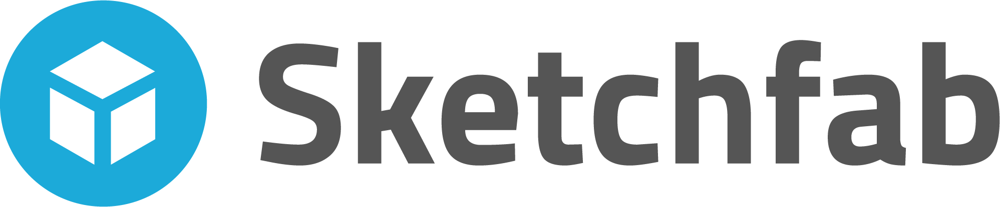2 Aug 2018
Konten Format Model 3 Dimensi Berilsensi CC di Platform Sketchfab
Sketchfab adalah platform yang berupaya memberdayakan cara baru berkreasi, yaitu kreasi model 3 Dimensi (3D), yang memudahkan siapa saja untuk mengumumkan dan menggunakan konten model 3D dalam format seperti Web,...
Tags:
-
 30 Jul 2018
30 Jul 2018Tiga Infografis Baru Dari Creative Commons Indonesia Untuk Anda Semua!
Creative Commons Indonesia (CCID) memublikasikan tiga materi komunikasi baru yang diharapkan dapat memberikan kemudahan bagi masyarakat luas dalam mengenal lisensi Creative Commons (CC). Ketiga materi komunikasi tersebut berupa infografis yang...
Tags:
-
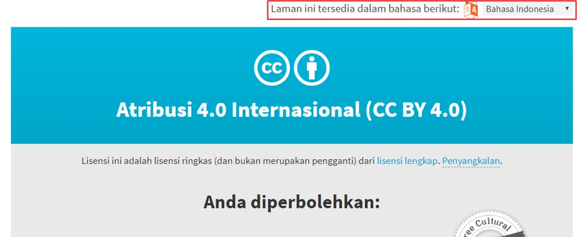13 Jul 2018
Tampilan Baru Laman Ketentuan Lisensi Lengkap Creative Commons
Tampilan lama dan baru laman ketentuan lisensi lengkap Creative Commons Hal yang paling terlihat dari pembaruan laman ini adalah tata letak dan warnanya yang disesuaikan dengan situs web resmi Creative...
Tags:
-
.jpg) 7 Feb 2018
7 Feb 2018SERTIFIKASI PERWAKILAN CCID - TRAINING OF TRAINERS CREATIVE COMMONS INDONESIA
PENDAFTARAN SUDAH DITUTUP
Tags:
-
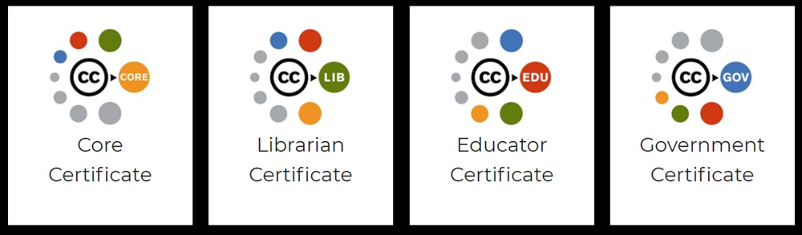5 Feb 2018
CC Certificates: Saatnya Menjadi Ahli Lisensi CC Bersertifikat!
Sertifikat Creative Commons Creative Commons (CC) Certificates atau Sertifikat CC merupakan salah satu upaya jangkauan keluar CC Internasional dalam menyebarkan pengetahuan terkait lisensi CC. Proses ini terbuka bagi siapa saja...
Tags:
-
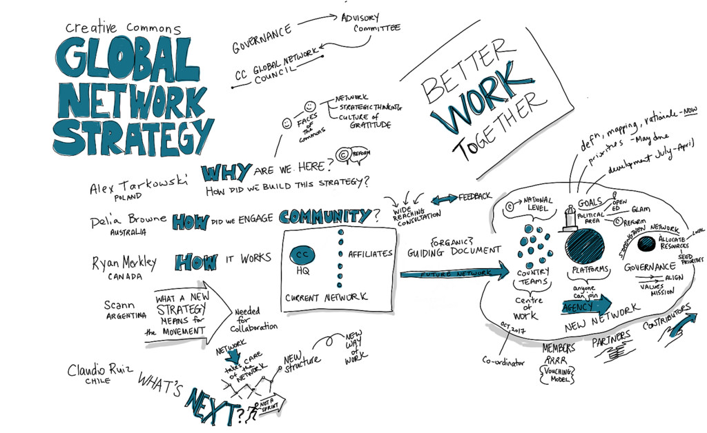8 Dec 2017
Jaringan Global Creative Commons
Sejak 17 Januari 2018 lalu Creative Commons Headquarter (CCHQ) meluncurkan secara resmi sistem jaringan terbaru mereka yaitu Creative Commons Global Network (CCGN) atau Jaringan Global Creative Commons. Model jaringan ini...
Tags:
-
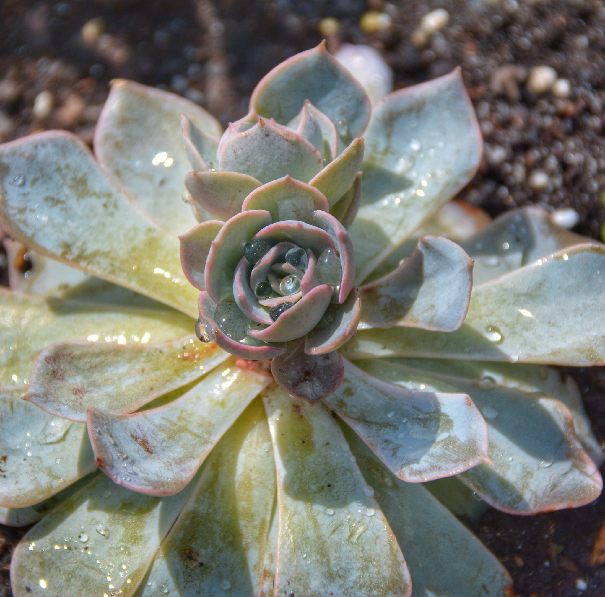4 Dec 2017
Esai Foto: 1000++ Foto Kekayaan Agrikultur oleh Michele Dorsey (CC BY via Flickr)
Michel Dorsey adalah akademisi dari Sekolah Tinggi Agrikultur dan Kekayaan Alam di Universitas Delaware yang memiliki ketertarikan dalam dunia fotografi. Dalam kesehariannya sebagai seorang akademisi di ranah agrikultur, ia banyak...
Tags:
-
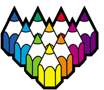21 Nov 2017
Pola-Pola Terbuka Untuk Diwarnai: Patterns for Colouring (CC BY-NC-SA)
Pernah mendengar kegiatan mewarnai sebagai sarana relaksasi? Pernah mendengar konsep print and play dari ranah kartu permainan? Bagaimana jika dua konsep tersebut digabungkan? }Logo proyek Patterns for Colouring Kegiatan mewarnai...
Tags:
-
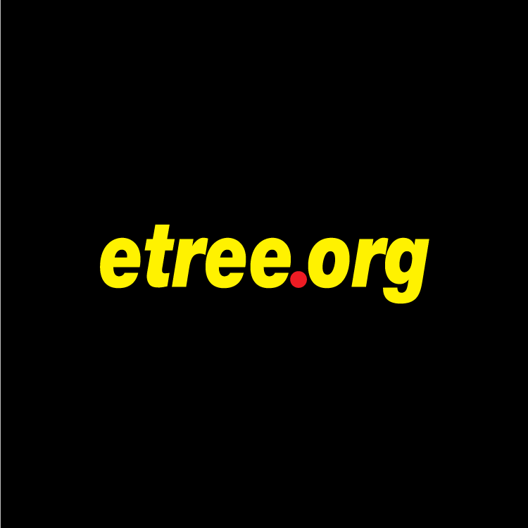6 Nov 2017
Arsip Pertunjukan Musik Terbuka di Internet Archive oleh Etree!
Anda suka menghadiri konser musik? Anda suka merekam pertunjukan tersebut? Anda suka berbagi? Etree bisa jadi salah satu komunitas yang bisa Anda ikut. Etree adalah sebuah komunitas berbagi berkas rekaman...
Tags:
-
27 Oct 2017
Berkas Suara Ruang, Gratis dan Berlisensi Terbuka, dari Free to Use Sounds!
“Sementara potret dapat menggantikan sejuta kata, rekaman suara dapat menggantikan sejuta potret” *Bernie Krause dalam The Great Animal Orchestra Bernie Krause adalah seorang ahli perekaman suara ruang (soundscape) yang mendedikasikan...
Tags:
-
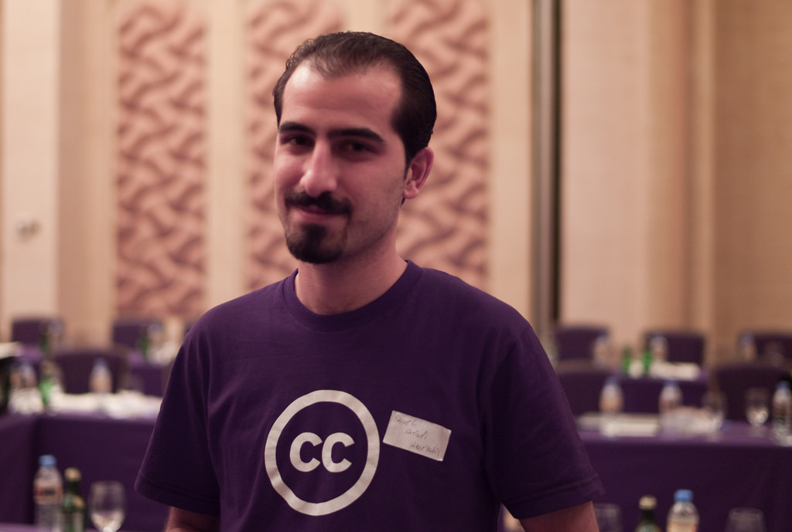2 Aug 2017
Kabar Duka: Bassel Khartabil (CC Suriah) Dieksekusi
Bassel Khartabil oleh Mohammed Nanabhay Dilansir dari situs web Creative Commons Internasional, hari ini (2/8/2017), Bassel Khartabil (CC Suriah) telah resmi dinyatakan meninggal dunia, dieksekusi oleh rezim Bashar Al Assad...
Tags:
-
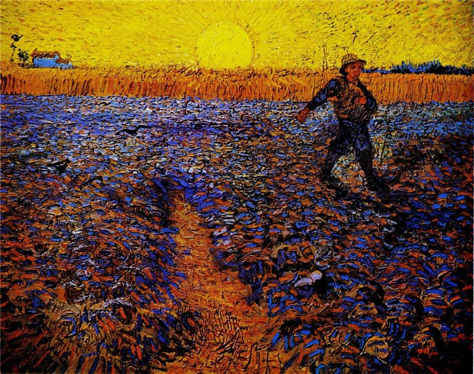23 Jul 2017
Apa saja yang dicari melalui mesin pencari Creative Commons?
Salah satu lukisan Picasso koleksi MET dari CC Search oleh Nathan Laurell/CC BY 2.0/ Creative Commons (CC) meluncurkan mesin pencari CC yang baru pada bulan Februari yang diikuti dengan peluncuran...
Tags:
-
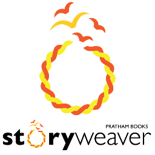19 Jul 2017
Jaringan Buku Cerita Anak Berlisensi Terbuka di StoryWeaver oleh Pratham Books
Pratham Books didirikan sebagai lembaga penerbitan nirlaba yang menerbitkan buku anak-anak sejak tahun 2004 dengan misi ‘untuk melihat buku di setiap tangan anak-anak’. Tujuan utama mereka adalah menerbitkan buku cerita...
Tags:
-
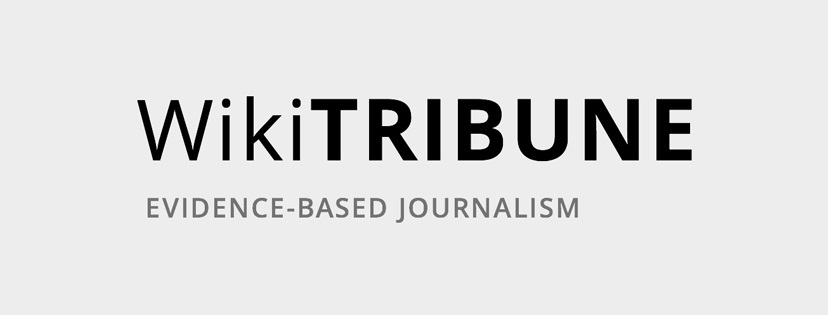12 Jul 2017
Mari Perbaiki Sistem Pemberitaan Bersama Wikitribune!
Wikitribune adalah proyek terbaru Wiki yang diinisiasi oleh [Jimmy Wales (https://id.wikipedia.org/wiki/Jimmy_Wales) sebagai upayanya untuk menutup tirai dari model bisnis media yang menjual pemberitaan palsu (fake news). Untuk mewujudkan visinya, Jimmy...
Tags:
-
 10 Jul 2017
10 Jul 2017Laporan Tahunan Terbesar Creative Commons: State of The Commons 2016
Logo State of The Commons 2016 Pada tanggal 28 April 2017 lalu Creative Commons meluncurkan laporan tahunannya yang berjudul State of The Commons. Di dalam laporan ini terdapat cerita-cerita inspiratif...
Tags:
-
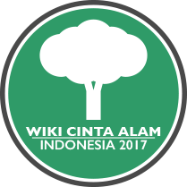10 Jul 2017
3000++ foto keindahan alam Indonesia oleh peserta kompetisi Wiki Cinta Alam Indonesia 2017!
Logo Wiki Cinta Alam Indonesia 2017 Wiki Cinta Alam Indonesia (WCAI) 2017 adalah kompetisi fotografi bentang alam Indonesia, baik flora maupun fauna, yang diadakan di Indonesia secara daring selama 30...
Tags:
-
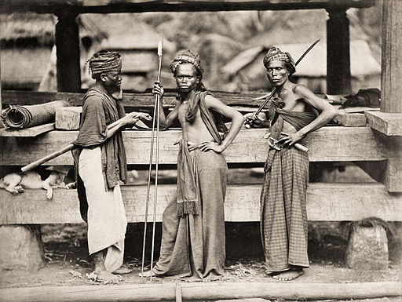20 Mar 2017
Menemukan Karya Fotografi dan Potret Bebas Hak Cipta Indonesia di Wikimedia Commons
Batak Wariors, Kristen Feilberg, Koleksi Museum Nasional Wereldculturen, Bebas Hak Cipta Anda sudah baca artikel kami tentang Wikimedia Commons? Sudah lihat juga berkas-berkas gambar dari Wikimedia Commons yang kami sisipkan...
Tags:
-
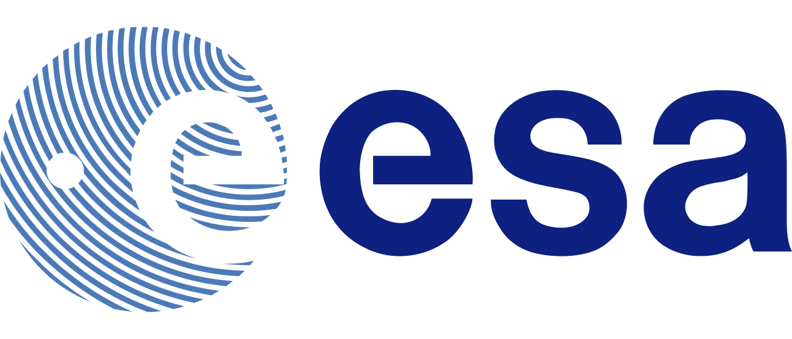10 Mar 2017
Ketentuan Keterbukaan Akses European Space Agency
Pada tanggal 20 Februari 2017, European Space Agency (ESA) menegaskan ketentuan Open Access (keterbukaan akses) untuk berkas audio, gambar, dan video yang mereka produksi. Selama lebih dari dua dekade, ESA...
Tags:
-
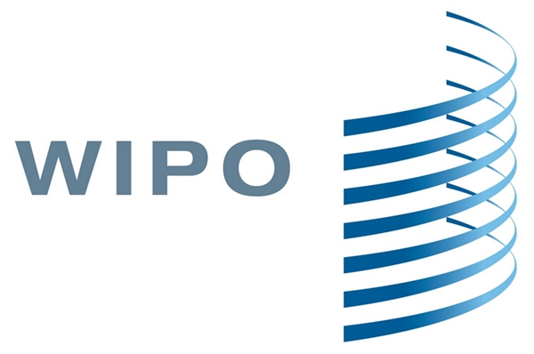7 Mar 2017
Jurnal Terbitan WIPO Berlisensi CC BY
Pada bulan November 2016 lalu, World Intellectual Property Organization (WIPO) mulai menerapkan prinsip keterbukaan akses pada terbitan-terbitannya. Penerapan prinsip ini bertujuan memperluas akses pembaca, dan membuat komitmen WIPO dalam aktivitas...
Tags:
-
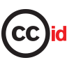20 Dec 2016
The top of the commons 2016
Halo sobat CCID! Kami ikut serta menyumbangkan daftar akhir tahun 2016 di situs Creative Commons Internasional. Daftar ini berisi kegiatan-kegiatan dari berbagai bidang yang menurut kami berkesan dalam 7 bulan...
Tags:
-
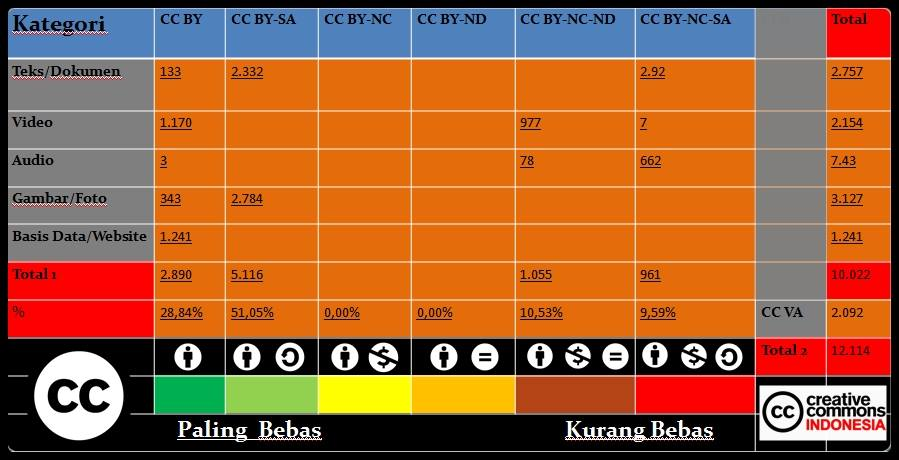17 Dec 2016
Ciptaan berlisensi CC di Indonesia mencapai angka 12.000!
Dalam suasana pertambahan usia Creative Commons, kami hendak mengumumkan bahwa jumlah ciptaan berlisensi CC di Indonesia telah mencapai angka 12.000!!! Anda dapat melihat rincian jumlah ciptaan berlisensi CC berdasarkan lisensi...
Tags:
-
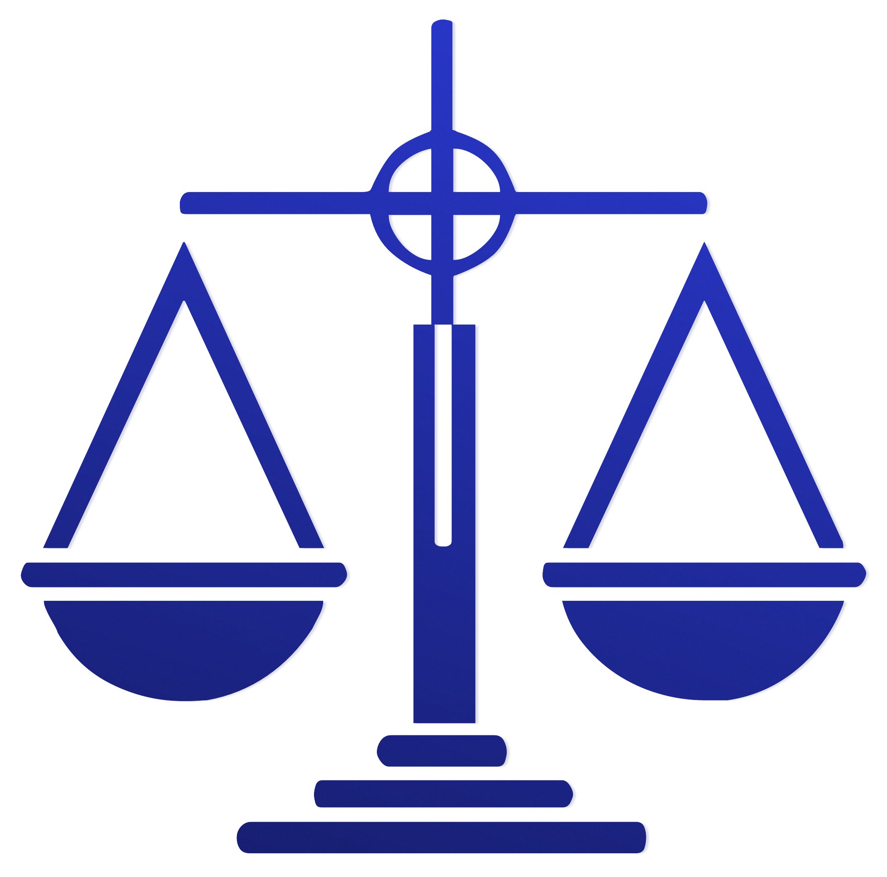28 Nov 2016
Lisensi Creative Commons Dibebaskan Dari Kewajiban Mencatatkan Lisensi!
Pada akhir tahun 2014, Indonesia mengeluarkan peraturan baru mengenai hak cipta yakni Undang-Undang No. 28 Tahun 2014 (UUHC 2014). Dalam Undang-Undang (UU) ini terdapat beberapa ketentuan baru yang mengatur tentang...
Tags:
-
2 Sep 2016
Infografik Bermain Internet Meme Sambil Menghindari Pelanggaran Hak Cipta oleh Beritagar!
Masih ingat dengan artikel “Bermain Internet Meme Sambil Menghindari Pelanggaran Hak Cipta” kami? Antyo Rentjoko dari Beritagar.id menginterpretasikan artikel tersebut dalam bentuk infografis! Selamat menyimak! Sumber gambar
Tags:
-
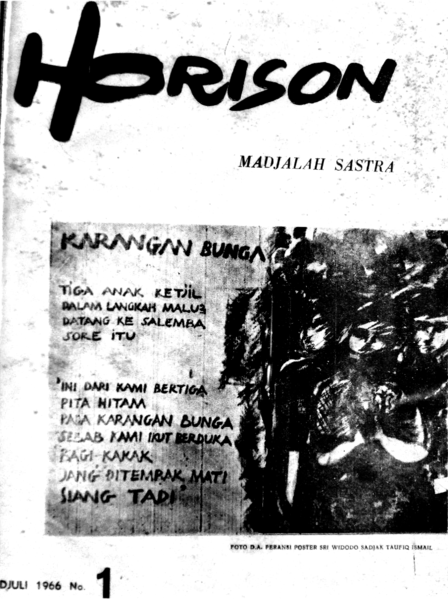26 Aug 2016
Majalah Horison Akan Hadir di Wikimedia Commons Secara Bertahap
Rapat Tim Wikimedia Indonesia dan Creative Commons Indonesia bersama Tim Redaksi Majalah Horison, 11 Agustus 2016 Pada hari kamis (11/08/2016) lalu, tim Wikimedia Indonesia dan Creative Commons Indonesia bertemu dengan...
Tags:
-
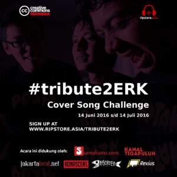22 Jun 2016
Prinsip Kerja Lisensi Creative Commons Di #CoverSongChallenge #Tribute2ERK
Poster #tribute2ERK Pengantar Redaksi: Panduan lisensi ini merupakan bagian dari rangkaian publikasi acara #CoverSongChallenge #tribute2ERK (14 Juni - 14 Juli 2016). Informasi lebih lanjut soal acara #tribute2ERK bisa Anda dapatkan...
Tags:
-
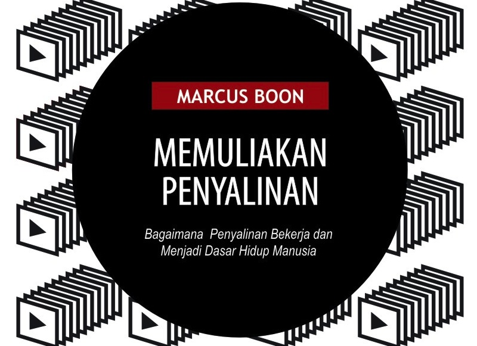19 May 2016
KUNCI Publication menerbitkan buku Memuliakan Penyalinan dan Anonymous Writers Club dengan Lisensi CC BY-NC-SA
Sumber gambar KUNCI Publication, divisi penerbitan dari KUNCI Cultural Studies, menerbitkan dua buku yakni Memuliakan Penyalinan dan Anonymous Writers Club dengan lisensi CC BY-NC-SA. Buku Memuliakan Penyalinan merupakan karya Marcus...
Tags:
-
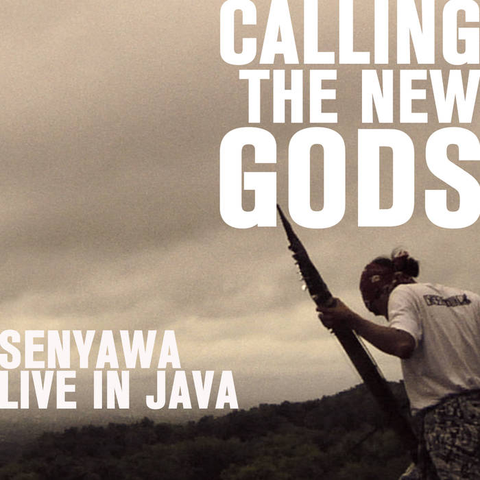18 May 2016
Koleksi Petites Planètes Senyawa
Sumber gambar Senyawa adalah duo Wukir Suryadi dan Rully Shabara yang terbentuk dan berasal dari Yogyakarta. Grup ini terbentuk lewat pertemuan mereka di atas panggung pada tahun 2010, yang diikuti...
Tags:
-
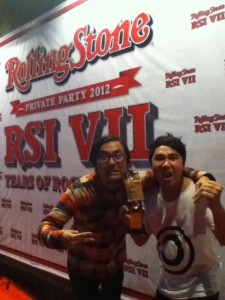25 May 2012
Bottlesmoker menjadi Pilihan Editor Rolling Stone 2012
Bottlesmoker adalah salah satu Sobat CC kategori musik, yaitu pengguna lisensi CC dalam penyebarluasan ciptaan musik yang mereka miliki. Dalam kurun waktu 7 tahun, Bottlesmoker telah berhasil menggelar konser di...
Tags:
-
7 May 2012
Indonesia Termasuk 3 Besar Negara dengan UU Hak Cipta yang Pro Kepentingan Publik
Consumers International (CI) adalah perkumpulan kelompok konsumen seluruh dunia yang bekerja sama dengan anggotanya agar berfungsi sebagai suara global yang independen dan otoritatif bagi konsumen. Dengan lebih dari 220 organisasi...
Tags:
-
23 Apr 2012
Let's CC: Mesin Pencari dari CC Korea
Creative Commons Korea (CC Korea) membuat mesin pencari ciptaan di bawah lisensi Creative Commons, yaitu Let’s CC yang dapat diakses melalui tautan http://eng.letscc.net. Melalui Let’s CC, Anda dapat menemukan gambar,...
Tags:
-
18 Apr 2012
Prof. Eko Indrajit: 7 books with CC license
Prof. Eko Indrajit has published seven books under CC BY-NC-SA 3.0 Unported license. One of his book, titled Teknologi Informasi dan Perguruan Tinggi: Menjawab Tantangan Pendidikan Abad ke-21, talks about...
Tags:
-
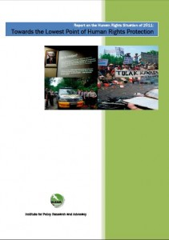17 Apr 2012
Laporan tentang Situasi Hak Asasi Manusia di Indonesia tahun 2011 dari ELSAM telah disebarluaskan dengan lisensi CC-BY
ELSAM (Lembaga Studi dan Advokasi Masyarakat) adalah organisasi berbentuk perkumpulan untuk penelitian dan advokasi kebijakan terkait hak asasi manusia di Indonesia. Pada bulan Januari 2012, ELSAM memublikasikan laporan terkini terkait...
Tags:
-
8 Mar 2012
Laporan mengenai Kebijakan Media & Industri Media di Indonesia Kontemporer telah Terbit dengan Lisensi CC
Hak Bermedia (Media Rights) adalah sebuah proyek yang didukung oleh Asosiasi Jurnalis Independen (AJI), Bengawan (Solo), ICT Watch, dan Jurnal Celebes untuk memetakan kondisi ekonomi politik media di Indonesia serta...
Tags:
-
7 Mar 2012
Situs Yayasan Kajian Budaya KUNCI dengan CC BY-NC-SA 3.0
KUNCI Cultural Studies Center / CC BY-NC-SA 3.0 KUNCI Cultural Studies Center adalah lembaga non-profit dan independen yang didirikan di Yogyakarta, Indonesia, pada tahun 1999 dan bekerja untuk mengembangkan masyarakat...
Tags:
-
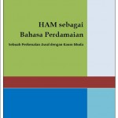5 Mar 2012
Buku Gratis dengan Lisensi CC: HAM sebagai Bahasa Perdamaian
Lembaga Studi dan Advokasi Masyarakat (ELSAM) adalah organisasi advokasi kebijakan di Indonesia yang memperjuangkan hak asasi manusia, baik hak sipil-politik maupun hak ekonomi, sosial, dan budaya secara tak terpisahkan. Kegiatan...
Tags:
-
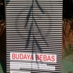29 Feb 2012
Terjemahan Buku "Budaya Bebas" dari Lawrence Lessig dalam Bahasa Indonesia
Pada tanggal 25 Februari 2012, salah satu kegiatan pada Jagongan Media Rakyat 2012 adalah bedah buku Free Culture: How Big Media Uses Technology and the Law to Lock Down Culture...
Tags:
-
16 Feb 2012
Indonesian netlabel @valetnarecords with CC BY-NC-SA license
Valetna Records is a record label from Semarang, Jawa Tengah, Indonesia. Valetna Records released singles from various artists and genre, under CC BY-NC-SA 3.0 license. Thus, before submitting your works...
Tags:
-
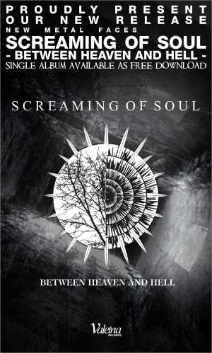13 Feb 2012
Indonesian metal band, Screaming of Soul, releases album under CC BY-NC-ND
Screaming of Soul / Valetna Records / CC BY-NC-SA 3.0 Screaming of Soul is a band with metalcore post screamo genre from Semarang, Indonesia. Screaming of Soul consists of Jonathan...
Tags:
-
3 Feb 2012
CCID Project Director (@arijuliano) interview with Jakarta Globe
Flickr: bizmac / CC BY 2.0 In order to fight online piracy, the U.S. Representative Lamar S. Smith introduces Stop Online Piracy Act (House Bill 3261), known better with its...
Tags:
-
22 Dec 2011
9 tahun #lisensiCC internasional
Pada 16 Desember 2002, lisensi CC 1.0 dari CC Internasional diresmikan. Sejak saat itu, telah ada lebih dari 500 juta ciptaan yang disebarluaskan di bawah berbagai jenis lisensi CC dan...
Tags:
-
15 Dec 2011
@icjrid: Access to Information in District Court of South Jakarta
Institute for Criminal Justice Reform (ICJR) has published a briefing paper regarding access to information in the District Court of South Jakarta (Pengadilan Negeri Jakarta Selatan). This briefing paper was...
Tags:
-
14 Dec 2011
Institute for Criminal Justice Reform (@icjrid) website with CC license
Institute for Criminal Justice Reform (ICJR) is a non profit organization working for law and criminal justice reform in Indonesia. ICJR is supporting the transformation of law and the criminal...
Tags:
-
13 Dec 2011
Alphabetajournal.com (@ab_journal): open your mind, share your thoughts!
Alphabetajournal.com is an open authorship site are made based on the thought that everyone is entitled to obtain and share knowledge, art and literature for free. This site has been...
Tags:
-
2 Dec 2011
inmyroom.us and yesnowave.com: Indonesian netlabel websites with CC licenses
Two Indonesian netlabels are using CC licenses in their websites. inmyroom.us is using CC BY-NC-ND unported license while yesnowave.com is using CC BY-NC-SA unported license for all materials and they...
Tags:
-
8 Nov 2011
Rapper Indonesia, @pandji, menerapkan lisensi CC pada albumnya yang berjudul "Merdesa"
Pada tahun 2010 Pandji Pragiwaksono menerbitkan album musiknya yang berjudul “Merdesa” dengan lsiensi CC BY-NC-SA. Dengan menerapkan lisensi ini Pandji memperbolehkan pengguna ciptaannya untuk membuat ciptaan turunan dari album tersebut,...
Tags:
-
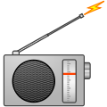7 Nov 2011
Dua Radio Daring Indonesia Menggunakan Lisensi CC
Hujan! Radio and KANALTIGAPULUH menggunakan CC-BY-NC-SA pada situs mereka, di mana Anda dapat mendengarkan lagu-lagu yang mereka putar. Hujan! Radio pertama kali melakukan siaran sejak tahun 2010, sedangkan KANALTIGAPULUH yang...
Tags:
-
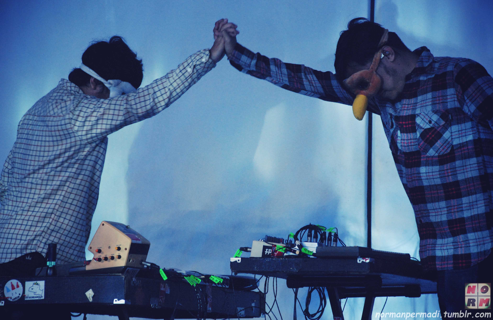1 Nov 2011
Bottlesmoker menggunakan lisensi CC pada karya musiknya
Bottlesmoker di Launching Yamaha Mio Fino Indonesia, foto oleh: emonemomen | CC BY 2.0 Bottlesmoker telah menerbitkan karya-karyanya yang berlisensi CC dalam rangka mendukung gerakan berbagi musik gratis. Mereka menerapkan...
Tags: